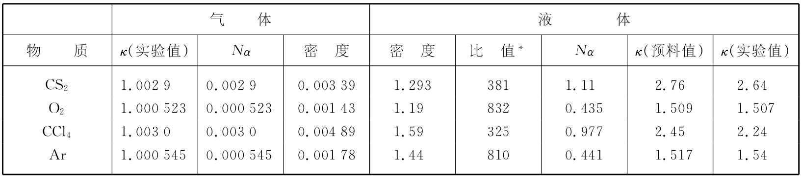

在液体中，我们期待对各个别原子起极化作用的场类似E空腔 ，而不是E。如果把式（11.25）的E空腔 用作式（11.6）中的极化场，则式（11.8）变成
这为我们提供了用原子极化率α表达的液体介电常量。式（11.28）称为克劳修斯-莫索提 方程。
每当Nα非常小时，如在气体那种情况（因为密度N很小），于是项Nα/3与1相比可以忽略，因而我们得到以往那个结果，即式（11.9），
κ-1=Nα. （11.29）
让我们拿式（11.28）同某些实验结果进行比较。有必要首先考虑能用κ的测量值通过式（11.29）算出α来的那些气体。例如，对于在0℃的CS2 来说，介电常量为1.0029，所以Nα就是0.0029。气体的密度一般容易算出，而液体的密度则可从手册中找到。液态CS2 在20℃的密度比在0℃时该气体的密度要高381倍，这意味着它处在液体时的N比处在气体时高381倍。因而——倘若我们近似地认为CS2 凝结成液体时，其基本原子极化率并不发生变化——在液体中的Nα便是0.0029的381倍，即1.11。注意项Nα/3的值接近0.4，所以就显得极为重要。用这些数字我们预测介电常量等于2.76，与2.64的观测值符合得相当好。
在表11-1中，我们列出了几种不同材料的一些实验数据（从《化学与物理学手册 》中得来的），以及按刚才所述的方法由式（11.28）计算出来的介电常量。对于Ar和O2 ，观测值与理论值的符合程度甚至比CS2 还要好——而对于CCl4 理论值与观测值的符合程度就不那么好了。大体上，所得结果都表明式（11.28）用起来十分良好。
表11-1 由气体的介电常数算出液体的介电常量
* 比值=液体密度/气体密度。
我们关于式（11.28）的推导仅适用于液体中的电子 极化。对于H2 O那样的极性分子来说，这个式子就不正确了。如果对水也做同样的计算，便会得出Nα等于13.2，那意味着在该液体的介电常量为负值 ，但κ的观测值却是80。这一问题牵涉到得对永久偶极矩作正确的处理，而昂萨格（Onsager）就曾指出过正确的方向。现在我们没有时间来讨论这种情况，但若你有兴趣的话，可参考克脱耳（Kittel）所著的《固体物理导论 》，书中对这个问题有所论述。